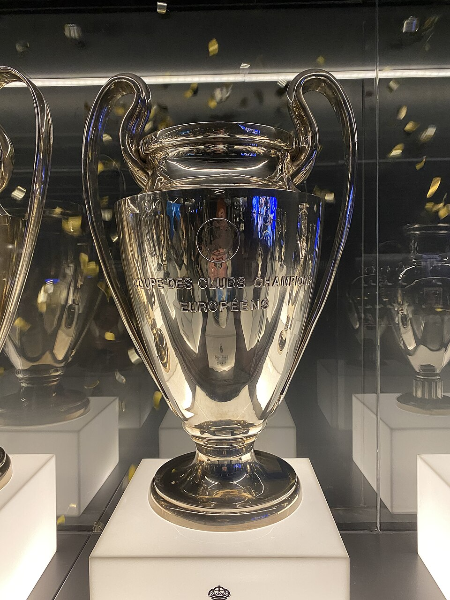
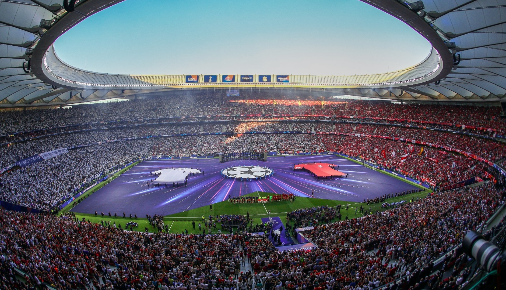

UEFA Champions League
What Is the Champions League?
The UEFA Champions League is the top annual club football competition organised by European clubs since 1955. It brings together the best teams from across Europe's domestic leagues to compete for the most prestigious trophy in club football.
- Organised by UEFA since the 1955-56 season
- Renamed from the "European Cup" to the "Champions League" in 1992
- The trophy is nicknamed "Ol' Big Ears"
- Its official anthem was composed by Tony Britten in 1992

How the Tournament Works
- League phase - all qualified clubs play in one combined table
- Knockout play-offs
- Round of 16
- Quarter-finals
- Semi-finals
- Final - played at a neutral venue chosen in advance
